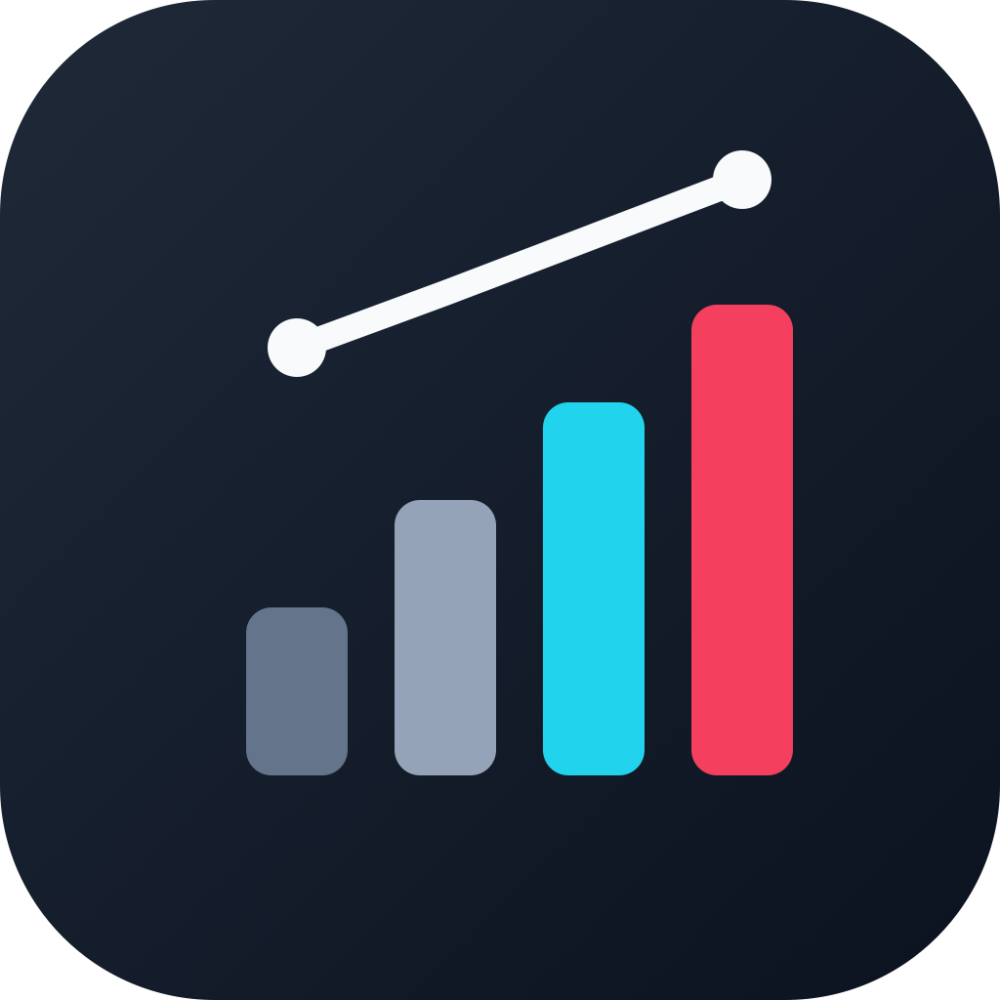

Stand: 23.09.2026
Diese Anwendung wird von einer Privatperson ausschließlich für den eigenen TikTok-Account betrieben. Sie richtet sich an keine weiteren Nutzer. Anfragen können über den verbundenen TikTok-Account gestellt werden.
„Edit Analytics“ ist ein privates Werkzeug zur Auswertung des eigenen TikTok-Accounts des Verantwortlichen. Es wird Dritten nicht angeboten und verarbeitet keine Daten fremder Personen.
Nach ausdrücklicher Autorisierung über das TikTok Login Kit werden ausschließlich Daten des verbundenen eigenen Accounts abgerufen:
user.info.basic, user.info.profile): Open ID, Anzeigename, Nutzername, Profilbild, Biografie, Verifizierungsstatus.user.info.stats): Anzahl Follower, Gefolgte, Likes und Videos.video.list): Titel, Beschreibung, Veröffentlichungszeitpunkt, Dauer, Vorschaubild sowie Aufrufe, Likes, Kommentare und Shares.Private Videos, Entwürfe und Direktnachrichten werden nicht abgerufen. Es werden keine Daten anderer TikTok-Nutzer verarbeitet.
Die Verarbeitung erfolgt auf Grundlage der ausdrücklichen Einwilligung nach Art. 6 Abs. 1 lit. a DSGVO, die im TikTok-Autorisierungsdialog erteilt wird.
Für die Verbindung wird die Integrationsplattform Composio eingesetzt. Dort wird das von TikTok ausgestellte Zugriffstoken gespeichert, um Anfragen an die TikTok-Schnittstelle stellen zu können. Eine Weitergabe der abgerufenen Daten an weitere Dritte findet nicht statt. Die Daten werden nicht verkauft, nicht zu Werbezwecken genutzt und nicht zum Training von KI-Modellen verwendet.
Abgerufene Kennzahlen werden nur so lange vorgehalten, wie sie für die jeweilige Auswertung benötigt werden. Das Zugriffstoken wird gelöscht, sobald die Verbindung aufgehoben wird.
Die Einwilligung kann jederzeit widerrufen werden, indem der Zugriff in den TikTok-Einstellungen unter „Sicherheit und Berechtigungen“ → „Apps verwalten“ entzogen wird. Danach ist kein weiterer Datenabruf möglich.
Es bestehen die Rechte auf Auskunft, Berichtigung, Löschung, Einschränkung der Verarbeitung, Datenübertragbarkeit sowie Widerspruch. Zudem besteht ein Beschwerderecht bei einer Datenschutzaufsichtsbehörde. Anfragen richten Sie bitte an die oben genannte Kontaktadresse.
Diese Erklärung wird angepasst, wenn sich der Funktionsumfang der Anwendung ändert. Maßgeblich ist die jeweils auf dieser Seite veröffentlichte Fassung.